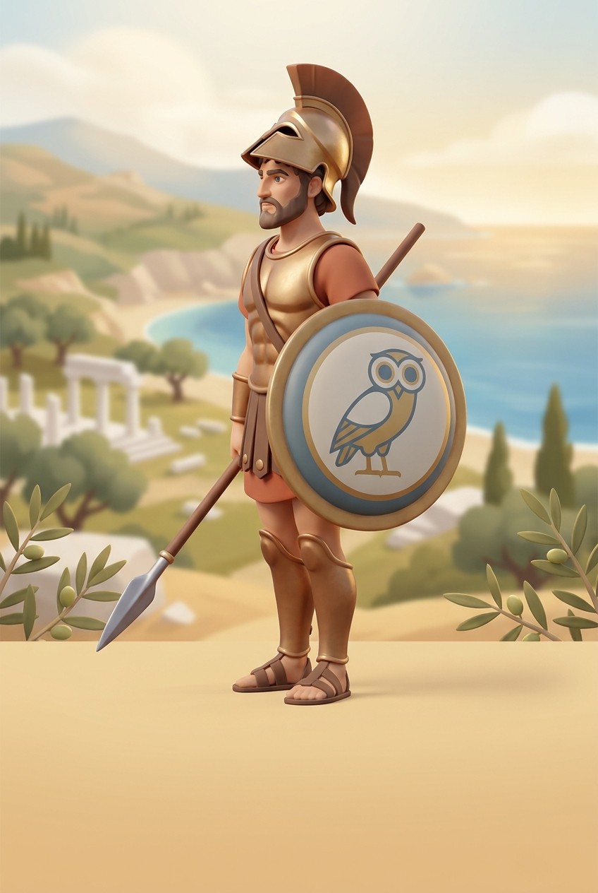
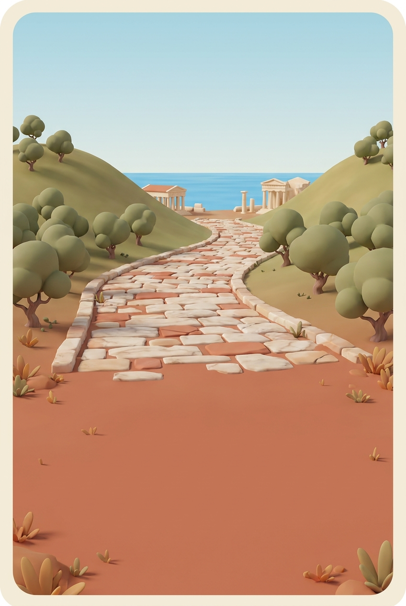
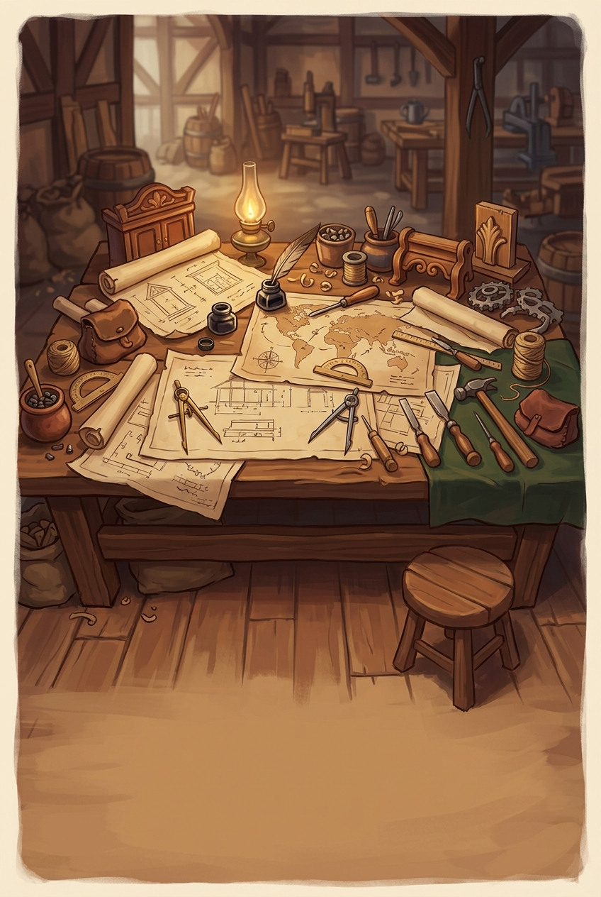
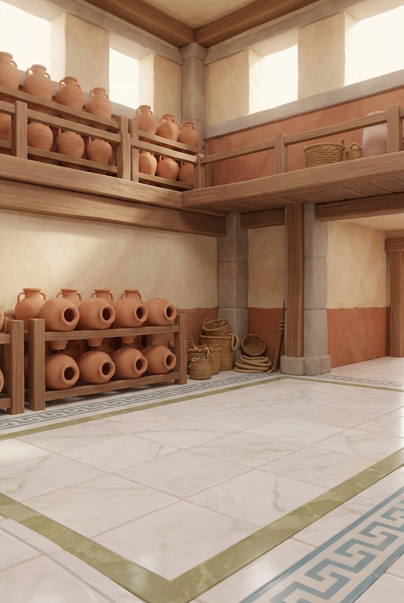
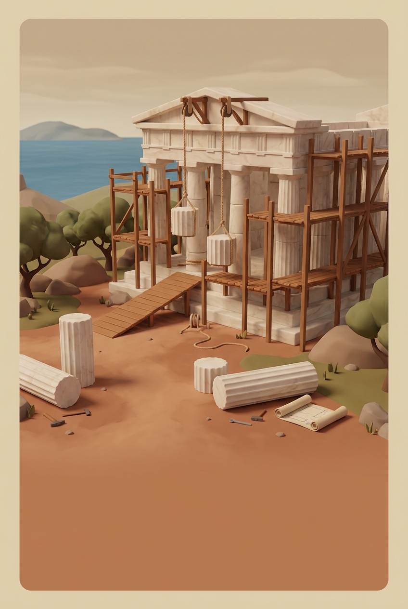
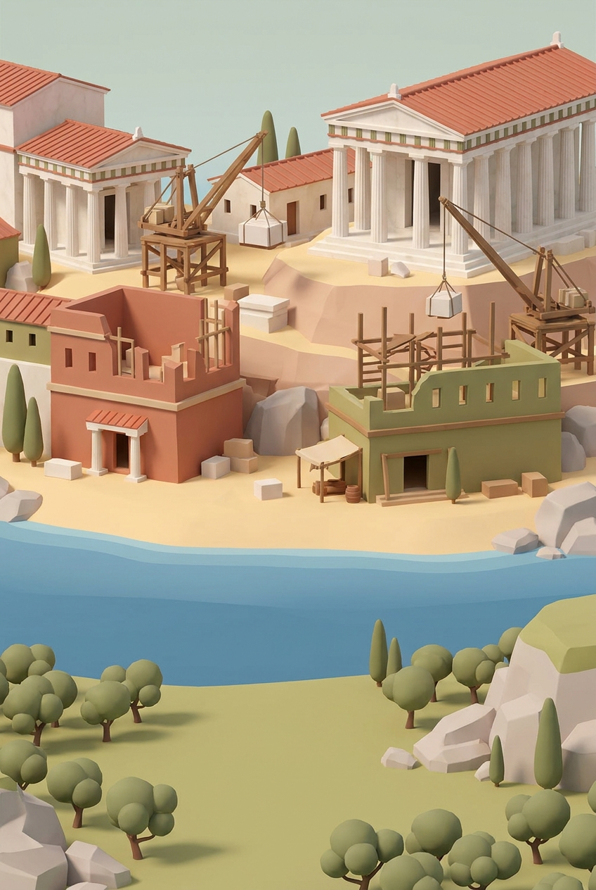
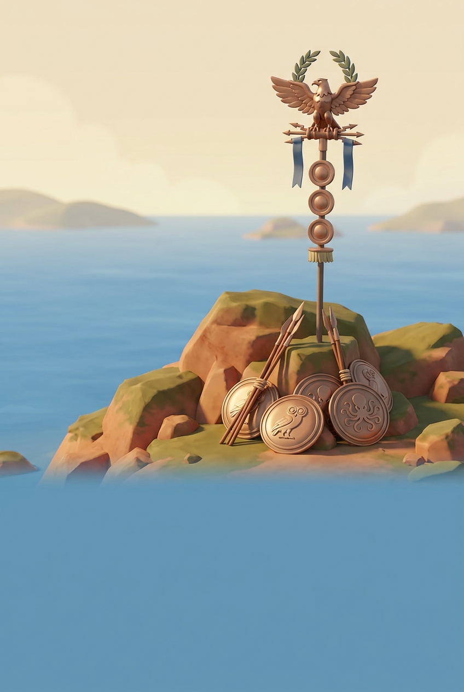
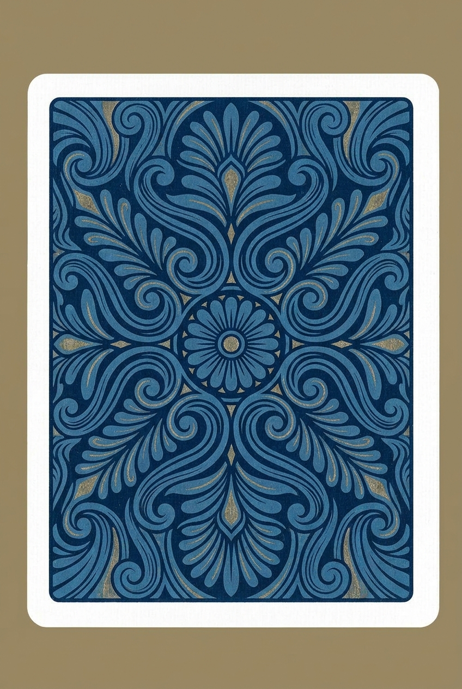

Acheter une carte
1 minerai, 1 laine, 1 blé — les mêmes ressources qu’une cité, en moins grande quantité. On ne sait pas ce qu’on tire.
Le paquet est mélangé par le générateur de la partie : à graine égale, la même partie tire les mêmes cartes dans le même ordre.
Les deux règles qui valent pour toutes
- Une carte ne se joue jamais le tour de son achat. Sans cette règle, on convertirait des ressources en chevalier au moment précis où l’on en a besoin.
- Une seule carte par tour. Sans elle, un joueur qui a thésaurisé viderait sa main d’un coup, hors de toute réaction — et à douze joueurs, personne n’aurait le temps de voir venir.
Seul le joueur actif joue des cartes. L’associé construit, achète et commerce avec la banque, mais ne joue pas de cartes : c’était déjà la règle du chevalier, et l’étendre évite d’avoir à arbitrer deux monopoles dans le même tour.
Les cinq cartes

Chevalier 30 cartes sur 60. Déplace l’Errant et vous laisse dépouiller un voisin qui a bâti sur l’hexagone choisi. Trois chevaliers joués vous donnent la plus grande puissance militaire : 2 points, jusqu’à ce qu’on vous dépasse.
Construction de routes 8 cartes. Une ou deux routes gratuites. Deux si vous avez la place ; une seule suffit si vous êtes enfermé — sinon la carte resterait morte en main.
Invention 8 cartes. Deux ressources de votre choix, prises à la banque — dans la limite de son stock, qui est fini.
Monopole 7 cartes. Vous nommez une ressource : tous les autres joueurs vous cèdent la totalité de ce qu’ils en ont. À douze, c’est dévastateur.
Bâtisseur 7 cartes. Une construction offerte, au choix : route, colonie ou cité. Seul le coût disparaît — les règles de placement, les pièces disponibles et les emplacements contestés s’appliquent normalement.Quand chaque carte peut être jouée
| Carte | Exemplaires | Fenêtre |
|---|---|---|
| Chevalier | 30 | Production ou tour actif |
| Construction de routes | 8 | Tour actif |
| Invention | 8 | Tour actif |
| Monopole | 7 | Tour actif |
| Bâtisseur | 7 | Tour actif |
Le chevalier garde une fenêtre plus large parce qu’il faut pouvoir écarter l’Errant avant de lancer les dés : c’est tout l’intérêt de le garder en main quand il campe sur votre meilleur hexagone.
Trente chevaliers sur soixante, contre quatorze sur vingt-cinq au Catan classique : ils servent deux fois — pour la puissance militaire, et pour déplacer l’Errant, qui à douze joueurs bloque plus de monde et plus souvent.
Précisions qui comptent
- Construction de routes valide les deux emplacements dans l’ordre donné, car la seconde route s’appuie souvent sur la première. Si la seconde est illégale, aucune des deux n’est posée.
- Invention respecte le stock de la banque : si elle n’a plus de brique, vous n’en obtenez pas.
- Bâtisseur offre la combinaison de ressources d’une construction, et non une construction supplémentaire. Ce chiffrage le met à parité avec Construction de routes — deux routes, soit quatre ressources — tout en laissant le choix.
Le concept d’origine prévoit un sixième type de carte : déplacer un marché, modifier un port, forcer une négociation, réduire l’Influence d’un joueur. Elles ne sont pas dans le paquet — la plupart de leurs effets supposent des systèmes qui n’existent pas encore. Voir L’horizon.
L’objectif secret
Deux vous sont proposés au début de la partie. Vous en gardez un. Personne ne saura lequel avant la fin.
Rempli, il vaut 2 points — l’équivalent d’une cité, sans ressources ni emplacement. C’est une information strictement privée : elle n’est jamais envoyée aux autres écrans, et n’apparaît qu’à la révélation finale.

Architecte Posséder 8 bâtiments.
Seigneur militaire Jouer 3 chevaliers.
Et trois autres Bâtisseur de cités, Colonisateur, Grand bâtisseur — le dos qu’en voient vos adversaires pendant toute la partie.| Objectif | Condition |
|---|---|
| Architecte | Posséder 8 bâtiments |
| Bâtisseur de cités | Posséder 4 cités |
| Colonisateur | Posséder 5 colonies en même temps |
| Grand bâtisseur | Poser 12 routes |
| Seigneur militaire | Jouer 3 chevaliers |
| Explorateur | Découvrir 5 territoires — indisponible |
| Magnat | Accumuler 12 or — indisponible |
| Diplomate | Honorer 3 contrats — indisponible |
Les trois derniers sont déclarés mais jamais distribués : leur système n’existe pas encore, et tirer une carte impossible à remplir serait pire que de ne pas l’avoir. Ils sont conservés plutôt que retirés — le jour où l’exploration, l’or et les contrats arriveront, il suffira de les rendre disponibles.
L’objectif oriente toute votre partie, et il explique bien des comportements. Si un voisin s’obstine deux heures durant à poser des routes qui ne mènent nulle part, vous saurez pourquoi à la révélation finale.
La veille de l’embarquement, chaque maison scelle un vœu sur une tablette d’argile. Le prêtre en propose deux ; on n’en emporte qu’un, et on ne le brise qu’au dernier jour — Les Douze Maisons.